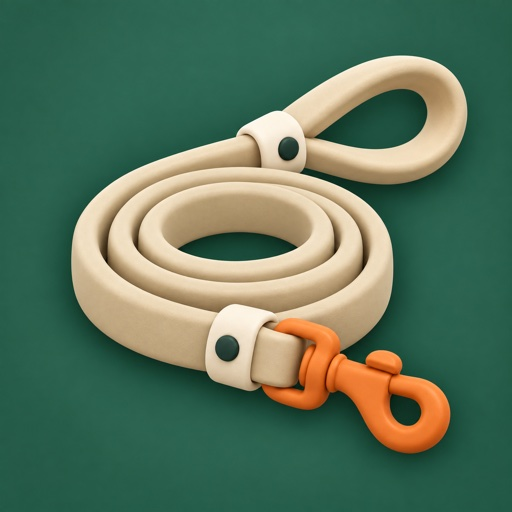

Hjelp med Pawtur
Sist oppdatert 28. september 2026
Pawtur fordeler hundeturene i familien med en turnus, viser hvem som faktisk gikk, og gjør det litt gøyere med poeng og badges.
Trenger du hjelp? Send en e-post til support@pawtur.app. Skriv gjerne hva du prøvde å gjøre, og hvilken iPhone og iOS-versjon du har.
Vanlige spørsmål
Hvordan kommer familien i gang?
Én lager flokken med hunden i appen. Under Flokken kan du invitere de andre med en kode som KAOS-1234. Koden virker for én person i 7 dager. Barn under 13 år og andre uten telefon legges inn som profil uten telefon.
Hvordan setter vi opp turnusen?
Under Flokken → Turnus velger dere tidene for turene (for eksempel morgen, ettermiddag og kveld) og hvem som har hvilken dag. Turnusen kan gå hver uke eller annenhver uke. Vil dere bare logge turer uten turnus, velg Bare logging.
Hvordan registrerer jeg en tur?
Trykk Start tur på Hjem. Appen tar opp ruta med GPS, også med låst skjerm, og henter været. Turen lagres på telefonen underveis, så den overlever at appen lukkes eller at du mister nettet. De andre ser at du er ute.
Hvorfor ser ruta eller distansen litt annerledes ut enn det jeg gikk?
GPS i telefonen bommer av og til med noen titalls meter, særlig mellom høye hus, under trær og når du står stille. Appen rydder derfor i ruta: den lagrer ingen punkter mens du står i ro, hopper over punkter med dårlig GPS, og fjerner enkeltpunkter der ruta hopper rett ut og rett tilbake. Distansen regnes fra den ryddede ruta når turen avsluttes, så den kan bli litt kortere enn det som stod underveis.
En GPS-tur må komme minst 200 meter fra hjemmet til flokken for å telle med en gang. Ellers må en annen i flokken godkjenne den, eller den godkjennes av seg selv etter 3 timer. Det samme gjelder hvis det var for lite GPS til å se ruta.
Hva skjer på en lang tur, eller hvis jeg glemmer å trykke Stopp?
Har flokken satt hjemmet, merker appen når dere kommer hjem fra en tur. Etter 10 minutter hjemme spør den om turen skal avsluttes da dere kom hjem. Svarer ingen, avsluttes den der etter en halvtime. Går dere ut igjen, glemmer appen det.
En tur kan vare i opptil 6 timer. Etter 2 timer, og så hver time, spør appen Er dere fortsatt ute på tur?, og du svarer med Fortsett turen i varselet eller på skjermen. Har flokken satt hjemmet, og telefonen beveger seg borte fra det, svarer appen selv, så en lang tur blir ikke avbrutt. Svarer ingen innen 15 minutter, lagres turen som avsluttet da appen spurte. Da blir en glemt tur høyst 2 timer.
Vi går sammen. Hvem får turen?
Alle som var med. Velg de andre under Går sammen med når du starter turen, eller trykk Bli med på turen på Hjem når noen andre allerede er ute. Turen teller i statistikken, poengene og badgene til alle som var med, mens flokken teller den én gang. Det holder at én tar opp turen med GPS.
Hvordan legger jeg til en widget?
Hold fingeren på et tomt sted på Hjem-skjermen til appene rister, trykk Rediger → Legg til widget, og søk etter Pawtur. Widgeten viser når hunden sist var ute, hvem som har neste tur og hvem som er ute nå. På låseskjermen: hold fingeren på låseskjermen, trykk Tilpass → Låseskjerm og feltet under klokken.
Kan jeg starte en tur uten å åpne appen først?
Ja. Legg Start tur i Kontrollsenter (sveip ned fra øverste høyre hjørne, hold fingeren på et tomt sted og trykk Legg til en kontroll), nederst på låseskjermen, eller på Handlingsknappen under Innstillinger → Handlingsknapp → Snarvei. Du kan også si «Start tur i Pawtur» til Siri. Turen starter med deg og alle hundene.
Hva er det som vises på låseskjermen når noen går tur?
Når noen i flokken starter en tur, viser låseskjermen og Dynamic Island hvem som er ute og hvor lenge, til turen er over. Du kan slå det av under Min profil → Vis når andre er ute.
Kan barna bruke appen?
Pawtur er for 13 år og eldre. Yngre barn er med som profil uten telefon, som en forelder legger inn under Flokken. De får plass i turnusen, poeng og badges. Når barnet går tur, starter en forelder turen på sin telefon og velger barnet under Hvem går?. Går barnet uten telefonen din, slår du av Ta med denne telefonen. Da tas bare tiden opp, og du trykker Stopp når barnet er tilbake. Har ingen startet turen, kan den føres inn etterpå under Turer.
Jeg glemte å starte turen. Hva gjør jeg?
Åpne Turer og trykk + for å føre inn turen i ettertid. En tur uten GPS må godkjennes av en annen i flokken, og godkjennes av seg selv etter 3 timer. Er du alene i flokken, godkjennes den med en gang.
Når får jeg påminnelser?
Du får en påminnelse 30 minutter før din tur går ut, hvis ingen har gått ennå. Er noen ute med hunden, sendes ingen påminnelse. Tar noen andre turen din, får du beskjed.
Varslene kommer ikke. Hva sjekker jeg?
Sjekk at varsler er slått på for Pawtur i iOS-innstillingene, og under Min profil i appen (avataren oppe til høyre på Hjem). Der velger du også bjeffelyd for liten, mellomstor eller stor hund, eller vanlig lyd.
Hvordan regnes poengene?
Hver tur gir 10 poeng, pluss ekstra for lange turer, regn eller snø, kulde, varme eller sterk vind, tidlig morgen eller sen kveld, og for å ta en tur for en annen. Poengene og antall turer vises på LeashBoard.
Hvordan fjerner jeg noen fra flokken?
Under Flokken, trykk på medlemmet og velg Fjern fra flokken. Turene de har gått, blir stående som tidligere medlem, så statistikken ikke endres.
Hvordan sletter jeg kontoen min?
Trykk på avataren din oppe til høyre på Hjem, og velg Slett kontoen min. Les mer i personvernerklæringen.
Kan jeg bytte språk?
Appen følger språket på telefonen. Du kan velge språk for Pawtur alene i iOS-innstillingene under Pawtur → Språk. Appen finnes på norsk og engelsk.
Personvern
Ingen reklame og ingen sporing. Les hva appen lagrer i personvernerklæringen.
Pawtur help
Last updated 28 September 2026
Pawtur shares out the family's dog walks with a schedule, shows who actually walked, and makes it a bit more fun with points and badges.
Need help? Email support@pawtur.app. It helps to say what you were trying to do, and which iPhone and iOS version you have.
Common questions
How does the family get started?
One person creates the pack with the dog in the app. Under Pack you can invite the others with a code like KAOS-1234. The code works for one person for 7 days. Children under 13 and others without a phone are added as a profile without a phone.
How do we set up the schedule?
Under Pack → Schedule you choose the times for walks (for example morning, afternoon and evening) and who has which day. The schedule can repeat every week or every other week. To just log walks without a schedule, choose Log only.
How do I record a walk?
Tap Start a walk on Home. The app records the route with GPS, also with the screen locked, and gets the weather. The walk is saved on the phone as you go, so it survives the app closing or losing the connection. The others can see that you are out.
Why do the route or distance look a little different from what I walked?
The phone's GPS is sometimes off by a few dozen meters, especially between tall buildings, under trees and when you stand still. So the app tidies the route: it saves no points while you stand still, skips points with poor GPS, and removes single points where the route jumps straight out and straight back. The distance is worked out from the tidied route when the walk ends, so it can be a little shorter than what you saw during the walk.
A GPS walk must get at least 200 meters from the pack's home to count right away. Otherwise someone else in the pack approves it, or it is approved automatically after 3 hours. The same goes when there was too little GPS to see the route.
What happens on a long walk, or if I forget to tap Stop?
When the pack has set its home, the app notices when you come home from a walk. After 10 minutes at home it asks whether to end the walk at the time you came home. If nobody answers, it ends there after half an hour. If you head out again, the app forgets it.
A walk can last up to 6 hours. After 2 hours, and then every hour, the app asks Are you still out on the walk?, and you answer with Keep going in the notification or on the screen. When the pack has set its home and the phone is moving away from it, the app answers by itself, so a long walk is not cut short. If nobody answers within 15 minutes, the walk is saved as ending when the app asked. That way a forgotten walk lasts 2 hours at most.
We walk together. Who gets the walk?
Everyone who came along. Pick the others under Walking together with when you start the walk, or tap Join the walk on Home when someone else is already out. The walk counts in everyone's statistics, points and badges, while the pack counts it once. One of you recording it with GPS is enough.
How do I add a widget?
Touch and hold an empty spot on the Home Screen until the apps jiggle, tap Edit → Add Widget, and search for Pawtur. The widget shows when the dog was last out, whose turn is next and who is out right now. On the Lock Screen: touch and hold the Lock Screen, tap Customize → Lock Screen and the field under the clock.
Can I start a walk without opening the app first?
Yes. Put Start a walk in Control Center (swipe down from the top right corner, touch and hold an empty spot and tap Add a Control), at the bottom of the Lock Screen, or on the Action button under Settings → Action Button → Shortcut. You can also say “Start a walk in Pawtur” to Siri. The walk starts with you and all the dogs.
What shows on the Lock Screen when someone is out?
When someone in the pack starts a walk, your Lock Screen and the Dynamic Island show who is out and for how long, until the walk is over. You can turn it off under My profile → Show when others are out.
Can children use the app?
Pawtur is for people aged 13 and over. Younger children take part as a profile without a phone, which a parent adds under Pack. They get a place in the schedule, points and badges. When the child walks the dog, a parent starts the walk on their phone and picks the child under Who is walking?. If the child walks without your phone, turn off Take this phone along. Then only the time is recorded, and you tap Stop when the child is back. If nobody started it, the walk can be logged afterwards under Walks.
I forgot to start the walk. What do I do?
Open Walks and tap + to log the walk afterwards. A walk without GPS must be approved by someone else in the pack, and is approved automatically after 3 hours. If you are alone in the pack, it is approved right away.
When do I get reminders?
You get a reminder 30 minutes before your walk runs out, if nobody has walked yet. If someone is out with the dog, no reminder is sent. If someone else takes your walk, you are told.
Notifications don't arrive. What should I check?
Check that notifications are on for Pawtur in the iOS Settings app, and under My profile in the app (your avatar at the top right of Home). That is also where you choose a bark for a small, medium or large dog, or the normal sound.
How are points counted?
Every walk gives 10 points, plus extra for long walks, rain or snow, cold, heat or strong wind, early mornings or late evenings, and for taking a walk for someone else. Points and walks are shown on LeashBoard.
How do I remove someone from the pack?
Under Pack, tap the member and choose Remove from the pack. Their walks stay as a former member, so the statistics do not change.
How do I delete my account?
Tap your avatar at the top right of Home, and choose Delete my account. Read more in the privacy policy.
Can I change the language?
The app follows the phone's language. You can choose a language for Pawtur alone in the iOS Settings app under Pawtur → Language. The app is available in English and Norwegian.
Privacy
No ads and no tracking. See what the app stores in the privacy policy.